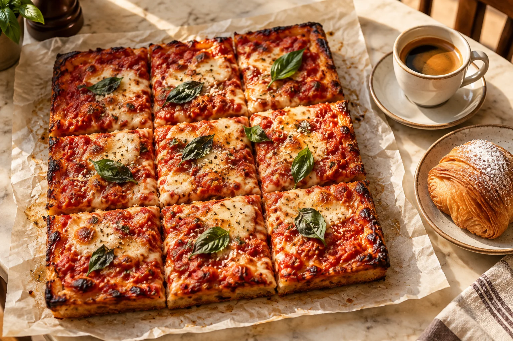

01 / 08
It starts with your order.
A square pizza. A small moment to look forward to.
Square pizza. Espresso. Bakery quick bites.
A small café with a familiar face behind the counter.
That’s the vision. We’re working to set up Crustpresso Zero.
A 10 × 10 ft café. Planned as equal preparation and customer zones.
Scroll to bring the café together.
Illustrative café concept. The final layout will validate dimensions, equipment and working space.
A little care.
At every step.
A square pizza. A small moment to look forward to.
Illustrated process concept · Recipe, equipment and packaging to be finalised
A square pizza. A small moment to look forward to.
A prepared portion is taken out, ready for the counter.
The dough is stretched and shaped into a square base.
A layer of sauce spreads across the square, leaving an edge for the crust.
Cheese and toppings are added before the pizza meets the heat.
The assembled square goes into the oven to bake.
The baked square is lifted out, ready for its final step.
The square pizza is portioned and packed, ready to take with you.
Something satisfying. A moment to pause. Food and coffee designed to fit into everyday life.

Square pizza at the heart of Crustpresso. A satisfying bite, whether you’re stopping in or sharing a moment.
Espresso coffee for your morning start, afternoon pause, or a conversation that runs a little longer.
Bakery quick bites for a small hunger, a coffee companion, or something while your pizza is prepared.
We imagine one Crustpresso in every neighbourhood: a small, welcoming café that becomes part of the local rhythm.
This is the ambition we’re building toward. It begins with one café, learning what works before growing.
Pizza, coffee, and bakery bites with an emphasis on affordability—so a café visit can become a small daily pleasure.
A hands-on operator who cares for the café and builds relationships with the people around it.
A compact format backed by common recipes, training, supplies, and operating systems.
Start with Crustpresso Zero. Test the food and the business. Take those lessons into each next neighbourhood.
A shared foundation for people ready to run a neighbourhood café.
The model is being developed around the café setup, equipment, brand, recipes, training, approved supplies and operating support.
Make the food. Serve the coffee. Know your regulars. Take responsibility for the operation and participate in its operating profit under agreed terms.
From working for a salary to running your own Crustpresso operation.
A journey for the pizza maker or barista ready to take on the daily responsibility of a café.
Our principleYou shape the dough. You pull the espresso. You remember the regulars.
As a salaried pizza maker or barista, you’re already doing work that brings a café to life.
You want to put that experience into a café you take responsibility for—its service, its standards, and its place in the neighbourhood.
Taking that step means more than making great food. It means learning to run the day.
Crustpresso’s Café as a Service model is being developed to provide the setup, equipment, brand, recipes, approved supplies, training, and operating support.
You develop your operating skills with a shared system behind you.
You prepare the pizza and coffee. You look after customers, stock, cleanliness, and the daily running of the café.
Your Crustpresso becomes a place people know through your care and consistent work.
The operating partner participates in the café’s operating profit under agreed terms. The opportunity is tied to actively running the café.
This is not a passive investment or a promise of guaranteed income.
Crustpresso is for people who work in their café. Putting in money alone does not make someone an operating partner.
The café operator takes responsibility for the daily business. This model is not offered as a passive-investor arrangement.
The hands-on operator shares in operating profit under the agreed commercial terms. Profit and income are not guaranteed.
Running your own Crustpresso operation does not transfer ownership of the brand, infrastructure, or equipment. Those remain with Crustpresso.
We’re working to set up Crustpresso Zero. Final participation and commercial terms will be shared before any commitment.
We’re working to set up Crustpresso Zero—our first café, where we plan to test the food, workflow, training, and business model before we expand.
Our ambition is neighbourhood by neighbourhood. Our first responsibility is to make the first café work.
Let’s talk on WhatsAppBring the food and compact café concept together.
Understand daily service, customer needs, and operating economics.
Use those lessons to support future local operators.
The neighbourhood network is our vision, not an existing footprint. Crustpresso Zero is in development. Confirmed locations and opening information will be shared when ready.
Crustpresso provides café infrastructure and operating support, while a partner runs the day-to-day café. It is a hands-on operating opportunity; the equipment and infrastructure remain with Crustpresso.
Square pizza, espresso coffee, and bakery quick bites form the core. Specific items, prices and availability are still being developed. The food photography is illustrative.
No. This operating-partner model is for people who actively run their Crustpresso café. It is not offered as a passive investment asset. Contributing capital alone does not qualify someone as an operating partner.
No. The Crustpresso brand, café infrastructure and equipment remain with Crustpresso. The partner runs the operation and participates in operating profit under agreed terms.
We’re working to set up Crustpresso Zero. If you’d like to know more about becoming a hands-on operator, message us on WhatsApp and we can discuss. Commercial terms are still being developed.
One Crustpresso in every neighbourhood. We’re starting with Zero—and building from there.
Let’s talk on WhatsAppHave a question? Let’s discuss.
+977 9849272620